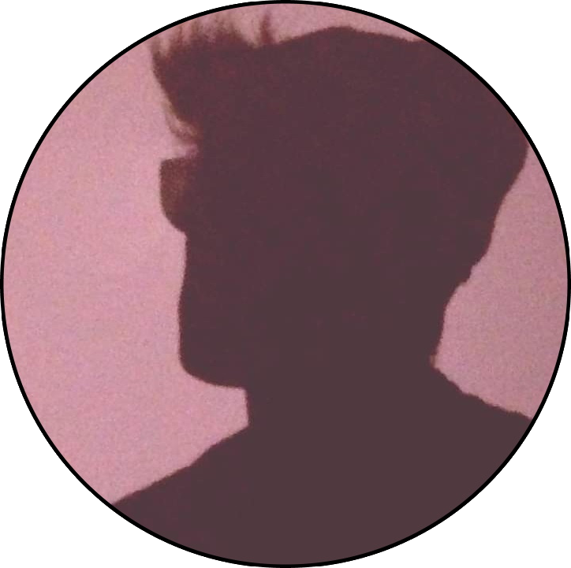
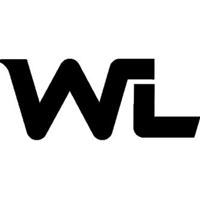
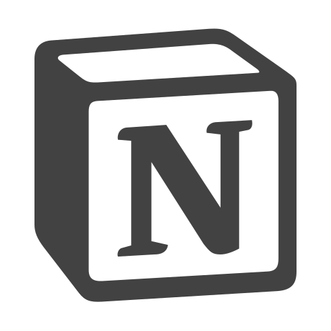

<div class="container">
    <div class="container-presentation" (click)="initialise()">
        <div class="photo" [@etatInitialisation]="initialisation"></div>
        <div class="presentation" [@etatInitialisation]="initialisation"><p>Julien Salgueiro Pereira, 26 ans, Gémeaux, Doggo Enthusiast.<br /><br /><br />J'aime le cinéma et surtout Wes Anderson, j'aime la musique et surtout le rap français (parfois ...), j'aime la culture japonaise et surtout les Kamehamehas.<br /><br /><br />Des fois je fais des sites internets, des logiciels ou des applications sympathiques.</p></div>
        <div class="citation1" [@etatInitialisation]="initialisation"><i>"Après nous, le déluge."</i><br /><br /><br />- Madame de Pompadour -</div>
        <div class="citation2" [@etatInitialisation]="initialisation"><i>"Rien de grand ne s'est accompli dans le monde sans passion."</i><br /><br /><br />- Georg Wilhelm Friedrich Hegel -</div>
        <div class="citation3" [@etatInitialisation]="initialisation"><i>"KONO DIO DA !"</i><br /><br /><br />- Dio Brando -</div>
        <div class="skills1" [@etatInitialisation]="initialisation">
            <h1>Compétences</h1>
        </div>
        <div class="skills2" [@etatInitialisation]="initialisation">
            <p>Acquises lors de mon cursus scolaire ou en autodidacte.</p>
        </div>
        <div class="langages" [@etatInitialisation]="initialisation">
            <h2>Langages et technologies</h2>
        </div>
        <div class="listlangages" [@etatInitialisation]="initialisation">
            <ul>
                <li>TypeScript</li>
                <li>W-Langages</li>
                <li>Java</li>
                <li>Python</li>
                <li>C</li>
                <li>NoSQL</li>
                <li>SQL</li>
                <li>PHP</li>
                <li>HTML5</li>
                <li>CSS3</li>
                <li>JavaScript</li>
            </ul>
        </div>
        <div class="logiciels" [@etatInitialisation]="initialisation">
            <h2>Logiciels et environnements</h2>
        </div>
        <div class="listlogiciels" [@etatInitialisation]="initialisation">
            <ul>
                <li>Linux</li>
                <li>Windows</li>
                <li>Eclipse</li>
                <li>PCSoft</li>
                <li>VSCode</li>
                <li>Git</li>
                <li>Vim</li>
                <li>Libre Office</li>
            </ul>
        </div>
        <div class="autres" [@etatInitialisation]="initialisation">
            <h2>Autres compétences</h2>
        </div>
        <div class="listautres" [@etatInitialisation]="initialisation">
            <ul>
                <li>Administration système</li>
                <li>Architecture des réseaux</li>
                <li>Rest</li>
                <li>Bootstrap</li>
                <li>Agilité</li>
                <li>Notion</li>
                <li>Anglais</li>
                <br /><br /><br />
                <li>Unreal Engine</li>
                <li>FruityLoops Studio</li>
                <li>Faire le poirier sur une main (c'est faux)</li>
            </ul>
        </div>
    </div>
</div>